Exceptions ในภาษา Python
ในบทนี้ คุณจะได้เรียนรู้เกี่ยวกับการจัดการข้อผิดพลาด (Error) ในภาษา Python ที่เรียกว่า Exception ซึ่งสามารถเกิดขึ้นได้ถึงแม้ว่า syntax ของโปรแกรมถูกต้อง แต่บางคำสั่งในโค้ดโปรแกรมนั้นทำให้เกิดข้อผิดพลาดขึ้น ซึ่งการจัดกการข้อผิดพลาดนั้นเป็นสิ่งที่ควรทำในการเขียนโปรแกรม เพราะมันจะทำให้โปรแกรมของคุณไม่แสดงข้อผิดพลาดให้กับผู้ใช้ได้เห็น
Syntax Errors
เหมือนที่คุณได้เรียนรู้โครงสร้างของภาษา Python ในบทก่อนหน้าทั้งหมดมาแล้ว เมื่อคุณเขียนโปรแกรมไม่ถูกต้องตามหลักไวยากร์ของภาษาจะทำให้เกิดข้อผิดพลาดขึ้นขณะที่โปรแกรมได้ทำการตรวจสอบซอสโค้ดของคุณหรือเราเรียกว่า Syntax errors
ในตัวอย่าง เป็นโค้ดของโปรแกรมที่จะทำให้เกิด Syntax errors ขึ้น เพราะว่าในคำสั่ง if จะต้องมีเครื่องหมายโคลอน (:) หลังจากเงื่อนไขของมัน เมื่อคุณรันโปรแกรมจึงทำให้เกิดข้อผิดพลาดขึ้น ดังนั้นในกรณีเกิด Syntax errors เราจำเป็นต้องแก้ไขโค้ดของโปรแกรมให้ถูกต้องก่อนจึงจะสามารถรันโปรแกรมได้
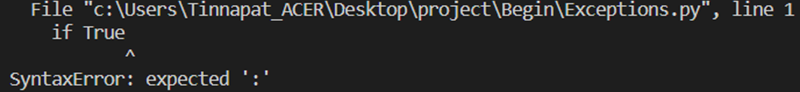นี่เป็นตัวอย่างผลลัพธ์ของข้อผิดพลาดที่เกิดขึ้นเมื่อคุณรันโค้ดดังกล่าว โดย Python จะแสดงชนิดของข้อผิดพลาดที่เกิดขึ้น ซึ่งประกอบไปด้วยชื่อไฟล์ บรรทัดที่เกิดข้อผิดพลาด และประเภทของข้อผิดพลาด ตามด้วยข้อความอธิบายสิ่งที่เกิดขึ้น
Exceptions
Exception นั้นแตกต่างจากข้อผิดพลาดก่อนหน้า มันสามารถเกิดขึ้นได้เมื่อโปรแกรมของคุณทำงานบางอย่าง เช่น การหารด้วยศูนย์ การใช้งานตัวแปรที่ไม่ได้ประกาศไว้ หรือการแปลงข้อมูลคนละประเภทกัน โดยพื้นฐานของภาษาแล้ว ข้อผิดพลาดส่วนมากไม่ได้รับการจัดการอัตโนมัติ ดังนั้น
คุณจำเป็นต้องจัดการกับมันเอง (Exception handing) ต่อไปเป็นตัวอย่างของคำสั่งที่สามารถทำให้เกิด Exception ได้
ในตัวอย่าง เป็นชุดของคำสั่งที่จะทำให้เกิด Exception ขึ้นและโปรแกรมจะหยุดการทำงานในทันที เราได้ทำการรันโปรแกรมสามครั้ง ในคำสั่งแรกเป็นการหารตัวเลขด้วยศูนย์ คำสั่งต่อมาเป็นการใช้งานตัวแปรที่ไม่ได้ประกาศ money และคำสั่งสุดท้ายเป็นการใช้งาน operand + กับประเภทข้อมูลที่ไม่ถูกต้อง
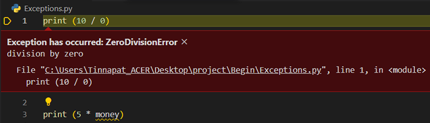เมื่อเราได้รันโปรแกรม ในคำสั่งแรกการหารตัวเลขด้วยศูนย์จะทำให้เกิด ZeroDivisionError exception ขึ้น บรรทัดถัดไป การใช้ตัวแปรที่ไม่ได้ประกาศไว้จะทำให้เกิด NameError exception และบรรทัดสุดท้าย การใช้ operand ไม่ถูกต้องกับประเภทของข้อมูลทำให้เกิด TypeError ตามลำดับ นี่เป็นข้อผิดพลาดพื้นฐานที่จะเกิดขึ้นเมื่อคุณเขียนโปรแกรมแล้วไม่ได้ตรวจสอบการทำงานให้ดี
Handling Exceptions
อย่างที่เราได้บอก เมื่อเกิด Exception ขึ้นโปรแกรมจะหยุดการทำงานในทันที ดังนั้นเพื่อให้โปรแกรมของเราสามารถทำงานต่อไปได้ เราจำเป็นต้องจัดการกับ Exception เหล่านั้น ซึ่งในภาษา Python มีรูปแบบในการจัดการกับ Exception ดังนี้
ในการจัดการกับ Exception จะใช้คำสั่ง try ... except สำหรับตรวจจับข้อผิดพลาดที่จะเกิดขึ้น ในบล็อคของคำสั่ง try จะเป็นการทำงานที่จะทำให้เกิดข้อผิดพลาดขึ้น และเราสามารถมีบล็อคคำสั่ง except ได้หลายอันเพื่อจัดการข้อผิดพลาดประเภทต่างๆ และถ้าหากคุณไม่ได้กำหนดประเภทให้กับ except หมายความว่ามันสามารถจัดการกับข้อผิดพลาดได้ทุกประเภทที่สืบทอดมาจากคลาส Exception นอกจากนี้ คุณยังสามารถใช้ else clause ซึ่งจะทำงานเมื่อไม่เกิดข้อผิดพลาดขึ้นในขณะที่โปรแกรมทำงานในบล็อคคำสั่ง try ต่อไปมาดูตัวอย่างการจัดการข้อผิดพลาดในภาษา Python
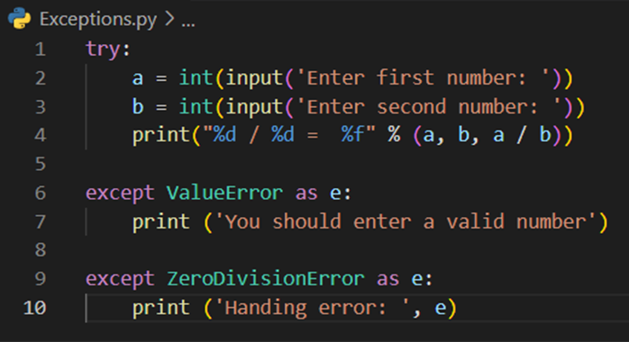ในตัวอย่าง เป็นโปรแกรมสำหรับรับค่าตัวเลขสองตัวจากทางคีย์บอร์ดและแสดงผลหาร ในบล็อคของคำสั่ง try เป็นการรับค่าตัวเลขและเก็บใส่ตัวแปร a และ b ตามลำดับ เนื่องต้องการแปลงค่าที่รับมาเป็นตัวเลขด้วยฟังก์ชัน int() ดังนั้น เราต้องมีบล็อค except เพื่อจัดการกับข้อผิดพลาด ValueError ที่จะเกิดขึ้นเมื่อค่าที่ใส่เข้ามานั้นไม่ได้เป็นตัวเลข
ต่อมาเป็นการแสดงผลการหารของตัวเลขเหล่านั้น ซึ่งสามารทำให้เกิด ZeroDivisionError exception ขึ้นได้เช่นกัน เราจึงได้ทำการใช้คำสั่ง except เพื่อจัดการกับข้อผิดพลาดนี้ ในการจัดการข้อผิดพลาดคุณอาจจะบอกวิธีการแก้ไขหรือแสดงรายละเอียดของข้อผิดพลาดนั้นให้ผู้ใช้โปรแกรมได้เห็นก็ได้
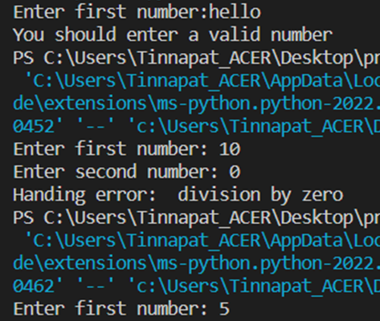นี่เป็นผลลัพธ์เมื่อเราได้รันโปรแกรมเป็นจำนวนสามครั้ง ครั้งแรกเป็นการใส่ข้อมูลที่ไม่ใช่ตัวเลขเข้ามา ทำให้เกิดข้อผิดพลาดขึ้นและโปรแกรมทำงานในบล็อคคำสั่ง exception ของ ValueError ต่อมาเราได้ใส่ตัวเลขตัวที่สองเป็นศูนย์ ทำให้เกิดข้อผิดพลาด ZeroDivisionError ขึ้น และสุดท้ายโปรแกรมของเราทำงานได้โดยไม่มีข้อผิดพลาด
ต่อไปมาดูตัวอย่างเพิ่มเติมสำหรับการจัดการข้อผิดพลาดในการทำงานกับไฟล์ ซึ่งในการทำงานกับไฟล์นั้นมีข้อผิดพลาดต่างๆ ที่สามารถเกิดขึ้นได้ เช่น การเปิดไฟล์ที่ไม่มีอยู่ หรือไฟล์นั้นไม่พร้อมใช้งาน เป็นต้น
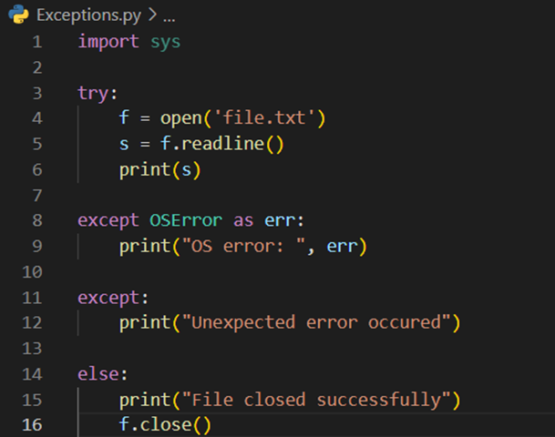ในการทำงานกับไฟล์ เราทำการนำเข้าไลบรารี่จาก sys มายังโปรแกรม และในบล็อคของคำสั่ง try เป็นการเปิดไฟล์ชื่อ file.txt และอ่านข้อมูลบรรทัดแรกมาแสดงผลทางหน้าจอ ในการเปิดไฟล์ถ้าหากไม่มีไฟล์อยู่จะทำให้เกิดข้อผิดพลาด OSError ขึ้นและเราได้ทำการแสดงข้อความบอกทางหน้าจอ เรายังทำการจัดการกับข้อผิดพลาดต่างๆ ที่อาจจะเกิดขึ้นด้วย
ในบล็อคของคำสั่ง else จะทำงานเมื่อไม่มีข้อผิดพลาดเกิดขึ้น นั้นหมายถึงเราเปิดไฟล์เพื่ออ่านข้อมูลได้สำเร็จ ดังนั้นเราจึงควรจะทำการปิดไฟล์ในบล็อคคำสั่งนี้
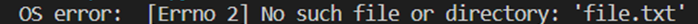นี่เป็นผลลัพธ์ของโปรแกรมที่จะแสดงข้อผิดพลาดขึ้นเมื่อเรารันโปรแกรมในทันทีโดยที่ยังไม่มีไฟล์ file.txt อยู่ และถัดมาเป็นผลลัพธ์ของโปรแกรมเมื่อเราสร้างไฟล์ file.txtและภายในไฟล์มีข้อความ "marcuscode.com" อยู่ข้างใน ทำให้โปรแกรมสามารถอ่านไฟล์ได้และนำข้อความมาแสดงผลบนหน้าจอ และหลังจากนั้นโปรแกรมทำงานในบล็อคคำสั่ง else
Raising Exceptions
ในภาษา Python มี build-exception ที่จะเกิดขึ้นโดยพื้นฐานเมื่อโปรแกรมมีข้อผิดพลาดขึ้น อย่างไรก็ตามโปรแกรมเมอร์สามารถสั่งให้เกิด Exception ขึ้นเองได้ โดยการใช้คำสั่ง raise มาดูตัวอย่างการใช้งาน
ในตัวอย่าง เป็นโปรแกรมสำหรับรับชื่อจากทางคีย์บอร์ดและทักทาย ถ้าหากชื่อที่ใส่เข้ามานั้นเป็น "mateo" เราจะทำให้เกิด exception ขึ้นด้วยคำสั่ง raise โดยสร้างออบเจ็คจากคลาส Exception ซึ่งเป็นคลาสในภาษา Python และกำหนดข้อความของเราเอง และถ้าหากชื่อที่ใส่เข้ามาเป็นอย่างอื่นที่ไม่ใช่ "mateo" โปรแกรมจะแสดงการทักทายและจบการทำงาน
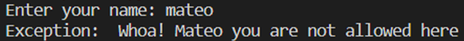 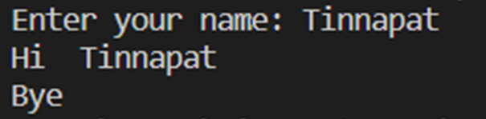และนี่เป็นผลลัพธ์การทำงานของโปรแกรม โดยครั้งแรกจะเกิดข้อผิดพลาดขึ้นเพราะว่าเราได้ใส่ชื่อเข้ามาเป็น "mateo" และครั้งที่สองไม่เกิดข้อผิดพลาดเพราะชื่อที่ใส่เข้ามาเป็น "marcus" และหลังจากนั้นโปรแกรมแสดงข้อความทักทายและคำบอกลาในบล็อคของคำสั่ง else
การสร้าง Exceptions
นอกจากการใช้งาน build-in exception จากภาษา Python แล้ว คุณยังสามารถสร้างคลาส Exception ขึ้นมาเองได้ เพื่อให้สามารถทำงานได้ตามที่ต้องการ ยกตัวอย่างเช่น การเพิ่มแอตทริบิวต์หรือเมธอดต่างๆ ภายในคลาส ต่อไปเราจะมาสร้างคลาสเพื่อจัดการข้อผิดพลาดของเราเอง
โดยในการสร้างคลาสนั้นเราต้องทำการสืบทอดมาจากคลาส Exception เสมอ มาดูตัวอย่าง
ในตัวอย่างของโปรแกรมนั้นจะแบ่งออกเป็นสองส่วน ในส่วนแรกเป็นการสร้างคลาสโดยเราได้สร้างคลาสมาสองคลาสคือ UsernameError เป็นคลาสของ Exception สำหรับจัดการเมื่อ username ไม่ถูกต้อง และคลาส PasswordError เป็นคลาสของ Exception สำหรับจัดการข้อผิดพลาดเมื่อรหัสผ่านไม่ถูกต้อง โดยในคลาสเราได้กำหนดแอตทริบิวต์สองตัวคือ message เป็นความสำหรับอธิบายข้อผิดพลาด และ error เป็นข้อมูลที่เกิดข้อผิดพลาดขึ้น และภายในคลาสทั้งสองมีเมธอด getMesssage() สำหรับรับข้อความการแสดงข้อผิดพลาดที่แตกต่างกันออกไป
ในส่วนต่อมา เป็นการทดสอบการจัดการข้อผิดพลาดของเรา โดยการจำลองการทำงานระบบ Login สำหรับให้ผู้ใช้เข้าสู่ระบบโดยการใส่ username และ password โดยเราจะทำการตรวจสอบถ้าหากชื่อผู้ใช้ไม่เป็น "mateo" เราจะทำให้เกิดข้อผิดพลาด UsernameError ขึ้น แต่ถ้าชื่อผู้ใช้ถูกต้องแต่รหัสผ่านยังผิดจะทำให้เกิดข้อผิดพลาด PasswordError ขึ้น นอกจากนี้ หมายความว่าการเข้าสู่ระบบสำเร็จ
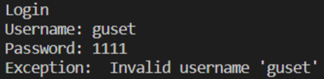 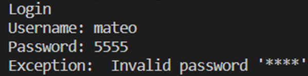 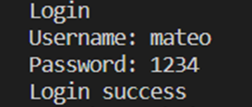นี่เป็นผลลัพธ์การทำงานของโปรแกรมจากการรันสามครั้ง ครั้งแรกเราได้ใส่ชื่อผู้ใช้ที่ไม่ถูกต้อง และครั้งที่สองเราได้ใส่ชื่อผู้ใช้ถูกต้องแต่รหัสผ่านผิด คุณจะสังเกตุเห็นสิ่งที่แตกต่างคือการแสดงข้อผิดพลาดของรหัสผ่านจะถูกปกปิดไว้ เพราะเราเรียกใช้เมธอด getMesssage() ซึ่งมีการทำงานที่ไม่เหมือนกันสำหรับแต่ละคลาส และสุดท้ายเป็นการใส่ชื่อผู้ใช้และรหัสผ่านถูกต้อง โปรแกรมจะบอกว่าเข้าสู่ระบบสำเร็จ
การใช้คำสั่ง Finally
อีกคำสั่งหนึ่งที่จำเป็นสำหรับการจัดการข้อผิดพลาดก็คือคำสั่ง finally ที่สามารถใช้ร่วมกับคำสั่ง try ... except ได้ โดยการทำงานของมันนั้นจะแตกต่างจาก else คือจะทำงานในบล็อคคำสั่งนี้เสมอ ไม่ว่าจะเกิดข้อผิดพลาดหรือไม่ก็ตาม มาดูตัวอย่างการใช้งาน
ในตัวอย่าง เป็นโปรแกรมสำหรับสั่งชื้อสินค้าชนิด เราได้ประกาศสินค้าที่มีอยู่ใน Stock ใส่ไว้ในตัวแปรลิสต์ items โดยโปรแกรมจะถามว่าต้องการซื้ออะไร หลังจากที่ใส่ชื่อสินค้าเข้ามาแล้ว เราได้ทำการตรวจสอบว่ามีในลิสต์ items หรือไม่ ถ้าหากไม่มีจะแสดงข้อผิดพลาดขึ้นว่าสินค้าหมด และถ้าหากมี จะแสดงข้อความว่าได้ซื้อสำเร็จแล้ว และในตอนสุดท้ายเราได้แสดงข้อความขอบคุณไม่ว่าลูกค้าได้จะได้ซื้อหรือไม่ก็ตาม ดังนั้น เราจึงกำหนดให้มันทำงานในบล็อคคำสั่ง finally
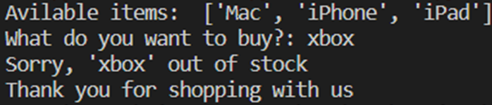 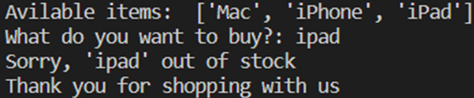นี่เป็นผลลัพธ์การทำงานของโปรแกรม อันแรกเป็นการใส่ชื่อสินค้าที่ไม่มีอยู่ ดังนั้นโปรแกรมจะแสดงว่าสินค้าหมดแล้ว และต่อมาเป็นการใส่ชื่อสินค่าที่มีอยู่คือ "iPad" และในตอนท้ายเราแสดงคำขอบคุณเสมอ
ในบทนี้ คุณได้เรียนรู้เกี่ยวกับการจัดการข้อผิดพลาดหรือ Exception ในภาษา Python เราได้ให้ตัวอย่างแบบต่างๆ ที่คุณสามารถนำไปประยุกต์เขียนโปรแกรมในขั้นสูงได้ต่อไป นอกจากนี้เรายังพูดเกี่ยวกับการสร้างคลาส Exception ขึ้นมาเองพร้อมวิธีการเรียกใช้งาน ซึ่งจะทำให้คุณสามารถขยายความสามารถในการจัดการข้อผิดพลาดตามที่คุณต้องการได้